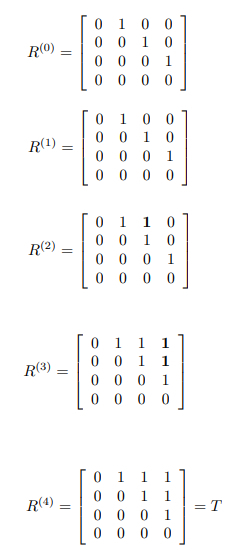

Q.5: Apply Warshall's algorithm to find the transitive closure of the digraph defined by the following adjacency matrix.
| 0 | 1 | 0 | 0 |
| 0 | 0 | 1 | 0 |
| 0 | 0 | 0 | 1 |
| 0 | 0 | 0 | 0 |
i) Prove that the time efficiency of Warshall's algorithm is cubic.
ii) Explain why the time efficiency of Warshall's algorithm is inferior to that of the traversal based algorithm for sparse graphs represented by their adjacency lists.
Answer:
Applying Warshall's algorithm yields the following sequence of matrices

(i) For a graph with n vertices, the algorithm computes n matrices R(k) (k = 1,2, ..., n), each of which has n2 elements. Hence, the total number of elements to be computed is n3. Since computing each element takes constant time, the time efficiency of the algorithm is in
Ɵ(n3).
(ii) Since one DFS or BFS traversal of a graph with n vertices and m edges, which is represented by its adjacency lists, takes
Ɵ(n + m) time, doing this n times takes nƟ(n+ m) =
Ɵ(n2+ nm) time. For sparse graphs (i.e., if m €
Ɵ(n)), (n2 + nm) =
Ɵ(n), which is more efficient than the (n3) time efficiency of Warshall's algorithm.